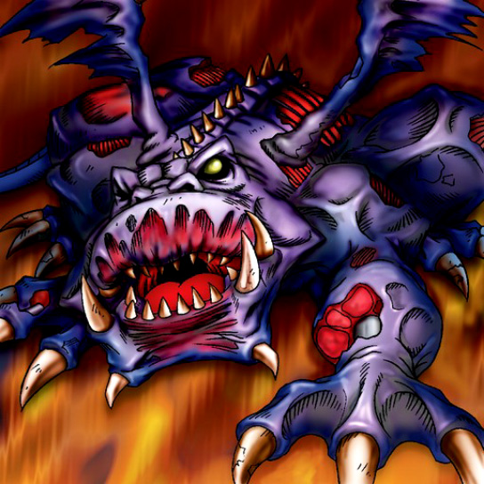

Dragon Zombie

STATS
ATK: 1600
DEF: 0DECK COST
Deck Cost per Card: 16Fusion List (80 Possible Fusions)
- Dragon Zombie + Abyss Flower = Pumpking the King of Ghosts
- Dragon Zombie + Ameba = Kairyu-Shin
- Dragon Zombie + Ancient Jar = Stone D.
- Dragon Zombie + Ansatsu = Sword Arm of Dragon
- Dragon Zombie + Arlownay = Pumpking the King of Ghosts
- Dragon Zombie + Armaill = Sword Arm of Dragon
- Dragon Zombie + Armed Ninja = Sword Arm of Dragon
- Dragon Zombie + Armored Zombie = Skelgon
- Dragon Zombie + Baby Dragon = Skelgon
- Dragon Zombie + Bat = Metal Dragon
- Dragon Zombie + Battle Warrior = Sword Arm of Dragon
- Dragon Zombie + Blackland Fire Dragon = Skelgon
- Dragon Zombie + Blue-Eyed Silver Zombie = Skelgon
- Dragon Zombie + Bolt Escargot = Twin-Headed Thunder Dragon
- Dragon Zombie + Bolt Penguin = Twin-Headed Thunder Dragon
- Dragon Zombie + Brave Scizzar = Metal Dragon
- Dragon Zombie + Cannon Soldier = Metal Dragon
- Dragon Zombie + Celtic Guardian = Sword Arm of Dragon
- Dragon Zombie + Change Slime = Kairyu-Shin
- Dragon Zombie + Clown Zombie = Skelgon
- Dragon Zombie + Corroding Shark = Skelgon
- Dragon Zombie + Crawling Dragon = Curse of Dragon
- Dragon Zombie + Cyber-Stein = Metal Dragon
- Dragon Zombie + Cyber Commander = Metal Dragon
- Dragon Zombie + D. Human = Sword Arm of Dragon
- Dragon Zombie + Dark Plant = Pumpking the King of Ghosts
- Dragon Zombie + Darkfire Dragon = Skelgon
- Dragon Zombie + Darkworld Thorns = Pumpking the King of Ghosts
- Dragon Zombie + Dissolverock = Stone D.
- Dragon Zombie + Dorover = Kairyu-Shin
- Dragon Zombie + Dragon Statue = Skelgon
- Dragon Zombie + Dragon Zombie = Skelgon
- Dragon Zombie + Electric Lizard = Twin-Headed Thunder Dragon
- Dragon Zombie + Electric Snake = Twin-Headed Thunder Dragon
- Dragon Zombie + Fiend's Hand = Skelgon
- Dragon Zombie + Firegrass = Pumpking the King of Ghosts
- Dragon Zombie + Flame Ghost = Skelgon
- Dragon Zombie + Graveyard and the Hand of Invitation = Skelgon
- Dragon Zombie + Griggle = Pumpking the King of Ghosts
- Dragon Zombie + Hero of the East = Skelgon
- Dragon Zombie + Jellyfish = Kairyu-Shin
- Dragon Zombie + Kagemusha of the Blue Flame = Sword Arm of Dragon
- Dragon Zombie + Kaminari Attack = Twin-Headed Thunder Dragon
- Dragon Zombie + Kaminarikozou = Twin-Headed Thunder Dragon
- Dragon Zombie + Kanikabuto = Kairyu-Shin
- Dragon Zombie + LaLa Li-oon = Twin-Headed Thunder Dragon
- Dragon Zombie + Laughing Flower = Pumpking the King of Ghosts
- Dragon Zombie + Lesser Dragon = Skelgon
- Dragon Zombie + M-Warrior #1 = Sword Arm of Dragon
- Dragon Zombie + M-Warrior #2 = Sword Arm of Dragon
- Dragon Zombie + Mammoth Graveyard = Great Mammoth of Goldfine
- Dragon Zombie + Man Eater = Pumpking the King of Ghosts
- Dragon Zombie + Masked Clown = Sword Arm of Dragon
- Dragon Zombie + Mech Mole Zombie = Skelgon
- Dragon Zombie + Mechanical Spider = Metal Dragon
- Dragon Zombie + Mega Thunderball = Twin-Headed Thunder Dragon
- Dragon Zombie + Metal Dragon = Curse of Dragon
- Dragon Zombie + Meteor Dragon = Curse of Dragon
- Dragon Zombie + Muka Muka = Stone D.
- Dragon Zombie + Mushroom Man = Pumpking the King of Ghosts
- Dragon Zombie + One-Eyed Shield Dragon = Skelgon
- Dragon Zombie + Oscillo Hero #2 = Twin-Headed Thunder Dragon
- Dragon Zombie + Petit Dragon = Skelgon
- Dragon Zombie + Phantom Ghost = Skelgon
- Dragon Zombie + Pot the Trick = Stone D.
- Dragon Zombie + Queen of Autumn Leaves = B. Dragon Jungle King
- Dragon Zombie + Sand Stone = Stone D.
- Dragon Zombie + Shadow Specter = Skelgon
- Dragon Zombie + Skelgon = Curse of Dragon
- Dragon Zombie + Skull Servant = Skelgon
- Dragon Zombie + Sword Arm of Dragon = Curse of Dragon
- Dragon Zombie + Swordsman from a Foreign Land = Sword Arm of Dragon
- Dragon Zombie + The 13th Grave = Skelgon
- Dragon Zombie + Thunder Dragon = Skelgon
- Dragon Zombie + Tripwire Beast = Twin-Headed Thunder Dragon
- Dragon Zombie + Vishwar Randi = Sword Arm of Dragon
- Dragon Zombie + Wicked Dragon with the Ersatz Head = Skelgon
- Dragon Zombie + Yamatano Dragon Scroll = Skelgon
- Dragon Zombie + Zombie Warrior = Skelgon
- Dragon Zombie + Zone Eater = Kairyu-Shin